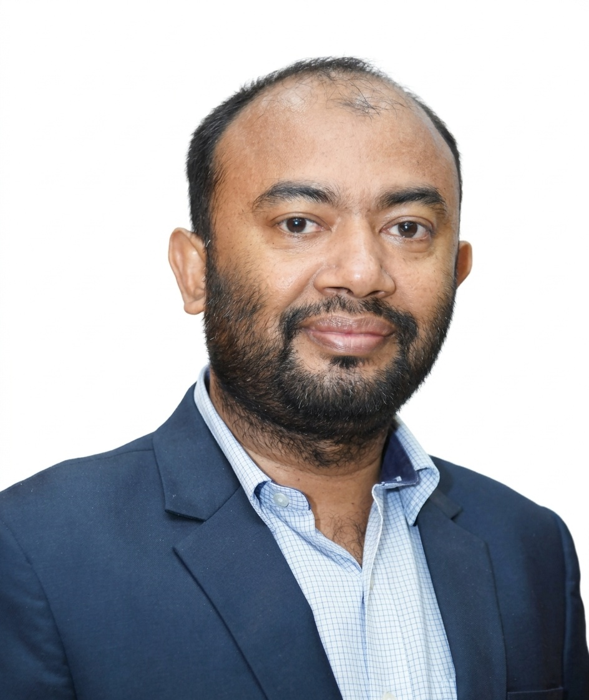

Md. Farid Ahmed
Enterprise IT Leadership, Systems Architecture & Governance | CISA Passed
- Dhaka, Bangladesh
- +880 1724-486878
- w3farid@gmail.com
- linkedin.com/in/w3farid
Executive Summary
Enterprise IT leader and systems architect with 13+ years of experience driving digital transformation, mission-critical ERP and portal rollouts, and cybersecurity governance across national regulatory and commercial environments.
Combines hands-on enterprise software leadership at ICAB and CTrends with ISACA CISA (exam passed September 2026; pending experience verification) and an M.Sc. in Applied Statistics and Data Science—delivering scalable platforms engineered for security, regulatory compliance, and audit readiness.
Key Enterprise Implementations
ICAB Integrated Information System (IIS) iis.icab.org.bd
ICABLed centralized platform implementation unifying student admission, member lifecycle, and CA firm registries—enforcing role-based access control (RBAC), master-data integrity, and institutional audit trails.
End-to-End Examination Automation System
ICABDirected full-lifecycle examination automation from online form fill-up, automated fee calculation, and multi-bank payment reconciliation through confidential result processing, with embedded validation controls and tamper-evident logging.
Enterprise ERP Implementation (Finance, HR & Asset Management)
ICABOversaw enterprise ERP rollout covering Finance, Human Resources, and Fixed Asset Management—embedding Segregation of Duties (SoD), multi-tier approval workflows, and financial reporting data integrity.
Moodle LMS & AI-Assisted Class Management Automation
ICABImplemented Moodle learning management platform integrated with AI-assisted class scheduling and academic operations automation, applying API governance, access controls, and data privacy safeguards.
Enterprise EBS Financial & GRC / Segregation of Duties Suite
CTrends SoftwareArchitected and delivered enterprise Financial modules (GL, AP, AR, Treasury), Workflow/DOA, and a GRC Segregation of Duties engine detecting conflicting entitlements and producing automated RBAC audit reports.
Core Competencies
Professional Experience
Senior Assistant Director, IT (Systems Governance and Architecture)
2022 – PresentInstitute of Chartered Accountants of Bangladesh (ICAB), Dhaka
- Direct enterprise IT strategy, application architecture, and cybersecurity posture aligned with the ICAB Reform Strategy 2025–2030.
- Lead cross-functional delivery, vendor coordination, and pre-implementation control assurance across institutional digitalization programs—modernizing core academic, examination, and administrative workflows.
- Enforce enterprise ITGC and release governance protocols: RBAC, periodic user access reviews, privileged access logging, structured CAB release control, and institutional audit liaison.
- Supervise SSL/TLS lifecycles, scheduled penetration tests, container security scanning, and OS/database patching across cloud and production Oracle environments.
- Validate backup restoration against RPO/RTO targets and execute business impact assessments supporting disaster recovery readiness across Smart Enroll, CA Connect, and ClearPath.
Senior Programmer and Technical Lead (ERP & Enterprise Controls)
December 2016 – 2022CTrends Software & Services Ltd.
- Led technical teams delivering the enterprise EBS framework, Financial suite (GL, AP, AR, Treasury), Employee Database, Workflow/DOA, Web GIS, and Flutter mobile solutions.
- Architected and deployed the GRC Segregation of Duties module detecting toxic combinations and conflicting entitlements, alongside tamper-evident database audit logs for external auditors.
- Built automated API and Dart code generators to accelerate enterprise delivery and led OWASP-aligned secure SDLC code reviews and vulnerability remediation.
Technical Instructor and Enterprise Systems Mentor
2019 – 2022IDB-BISEW IT Scholarship Project
- Taught graduate engineering scholars enterprise architecture (J2EE/Spring), ACID transaction integrity, and secure software design.
- Mentored cohorts on input validation, boundary checking, exception handling, and automated unit testing (JUnit, Mockito).
IT Executive (Field Systems and Controls)
January 2014 – July 2015British American Tobacco Bangladesh (BATB)
- Maintained operational controls, Android field application enhancements, and secure data synchronization between nationwide handheld units and central cloud repositories.
- Enforced mobile device data security policies and monitored synchronization logs for transmission exceptions.
Certifications and Training
- Certified Information Systems Auditor (CISA), ISACA. Exam passed September 2026. Certification pending experience verification.
- Google Advanced Data Analytics Professional Certificate, Google / Coursera. In progress.
- Foundations: Data, Data, Everywhere, Google / Coursera. Completed August 2026.
- Oracle Certified Professional, Java SE 6 Programmer (OCJP), Oracle University, 2016.
Education
- Master of Science (M.Sc.), Applied Statistics and Data Science, Jahangirnagar University, Savar, Dhaka. 2025.
- Post-Graduate Diploma, Enterprise Systems Analysis and Design (J2EE), IDB-BISEW IT Scholarship Project, Dhaka. 2017.